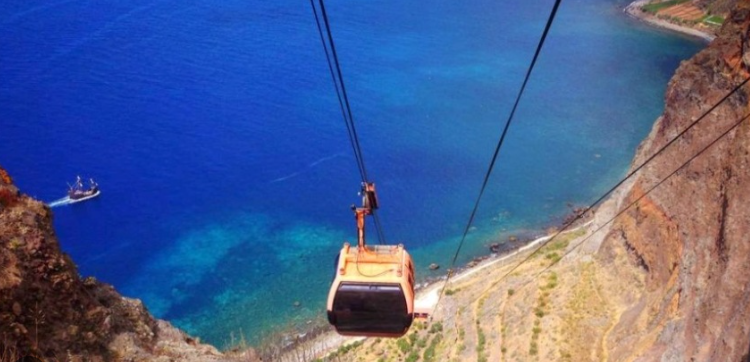
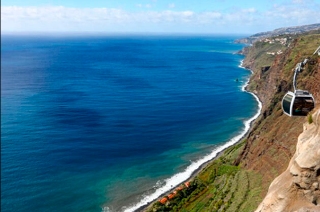

✨ Faja dos padres ✨
Viaje a Madeira 🚀
 
Características:
Es una zona de dificil acceso, solo se puede llegar en teleférico porque está rodeado de montañas
Tiene una playa tranquila y aislada donde te puedes bañar y saltar al agua